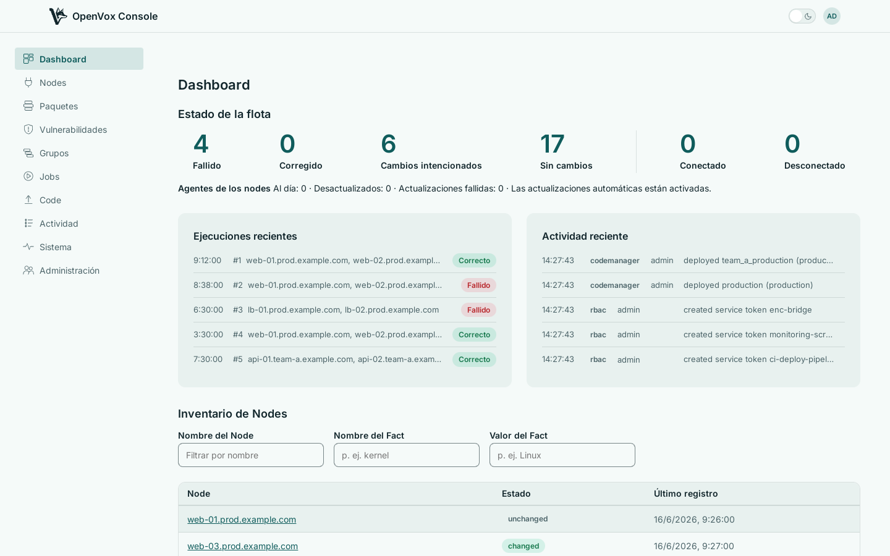

Vea cada Node, decida qué se ejecuta y dónde, despliegue su código, aplique parches, ejecute Tasks y Plans, y actúe sobre lo que vuelve. Una consola de Puppet Enterprise para OpenVox: un binario de Go, sobre el openvox-server y el openvoxdb que ya ejecuta.


Por qué la eligen los equipos
Cada imagen de abajo es la propia consola, capturada de una instancia en funcionamiento.

Cada paquete que reporta cada Node, contrastado con las vulnerabilidades conocidas de OSV (o de su propio espejo, para entornos sin salida al exterior) y de Tenable, combinadas en una sola lista. Vea primero qué arreglaría la aplicación de parches. Un Node que nadie pudo evaluar se muestra exactamente así, nunca como limpio.

Inicio de sesión único mediante OpenID Connect, con los grupos de su proveedor asignados a roles de la consola en cada inicio de sesión. Los roles son simples conjuntos de permisos, así que cada persona ve exactamente lo que requiere su trabajo. La automatización recibe sus propios tokens de servicio, y cada cambio queda registrado.

Empiece con una instancia. Cuando crezca la flota, ejecute la misma imagen como instancias web, worker y orchestrator separadas, en clúster con TLS mutuo, y sitúe la clasificación justo al lado de sus compiladores. Todo lo persistente vive en Postgres, así que las instancias van y vienen detrás de un balanceador de carga, y una sola página las muestra todas.

Ejecute Puppet en un Node, en una selección o en todos los Nodes con los que coincide un grupo, sin esperar a la siguiente ejecución programada. El resultado de cada Node llega por separado (estado, salida y un enlace al Report que produjo), y un Node que estaba desconectado lo indica de inmediato.

Despliegue desde un repositorio de control o desde uno por equipo, bajo demanda o en cada push. Después vea, para cada repositorio, cuántos Nodes están asignados a sus Environments frente a cuántos se ejecutan realmente a partir de ellos: la diferencia que indica que un deploy no ha llegado, o que hay Nodes ejecutando código al que nada los envía.
Y el resto de una consola
Construida sobre el stack que ya usa
openvox-server sigue compilando catálogos y gestionando la CA; openvoxdb sigue almacenando Facts y Reports. Sus agentes siguen hablando exactamente con lo mismo de ahora: la consola sirve el contrato ENC estándar, así que no hay nada que cambiar del lado del Node.
docker compose up levanta openvoxserver, openvoxdb, Postgres y la consola a la vez, de modo que puede apuntar un agente de prueba y ver aparecer sus propios Nodes antes de comprometerse con nada.
OpenVox Console se distribuye como imágenes de contenedor, compiladas para amd64 y arm64 en cada push, y como un único binario. Las guías de instalación le llevan de un host vacío a un despliegue funcional (openvoxserver, openvoxdb, Postgres y la consola) con contenedores o con paquetes.